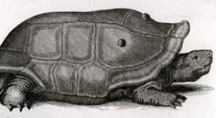

Descripción de la Tortuga de Réunion
Extinto: Siglo XVIII.
Ubicación: Isla Reunión, Océano Índico.
Causa: Caza por marineros y especies invasoras.
La tortuga gigante de Réunion era una tortuga terrestre de gran tamaño que vivía en la isla Reunión. Estas tortugas eran muy comunes antes de la llegada de los europeos.
Estas tortugas eran tan numerosas que los marineros las recolectaban en grandes cantidades para alimentarse durante sus viajes. Además, con la introducción de animales invasores como ratas y cerdos, sus huevos y crías fueron depredadas, acelerando su extinción.